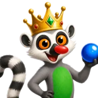
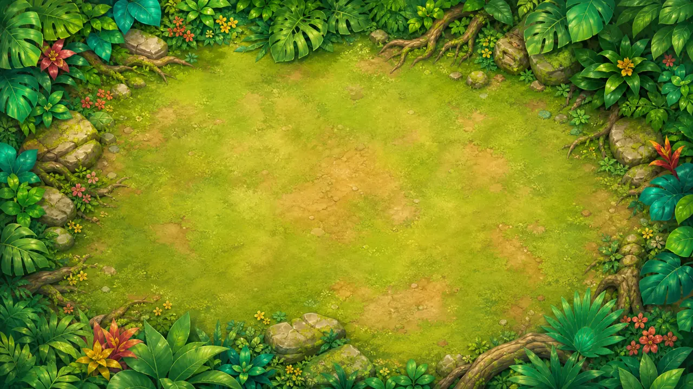
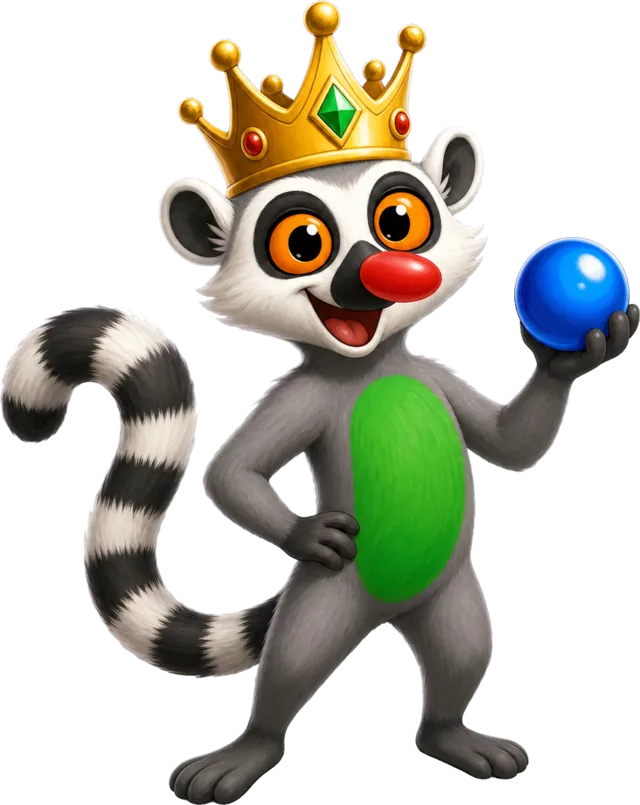
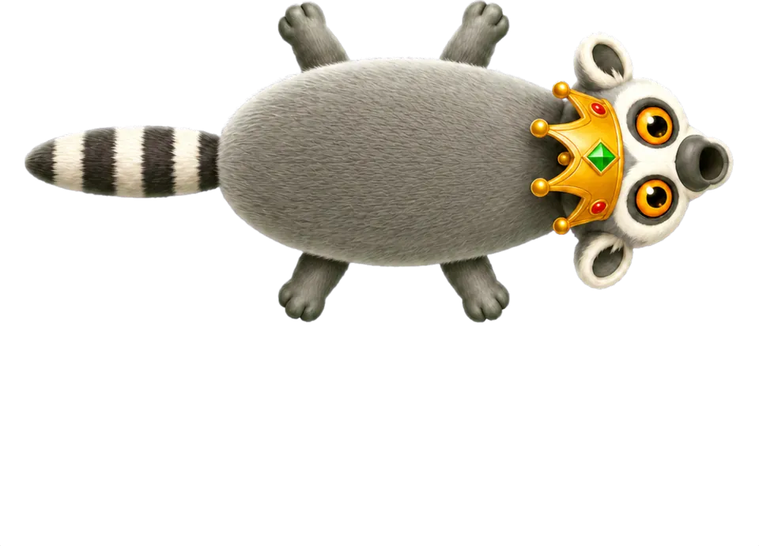
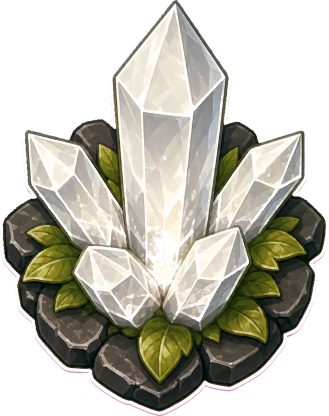
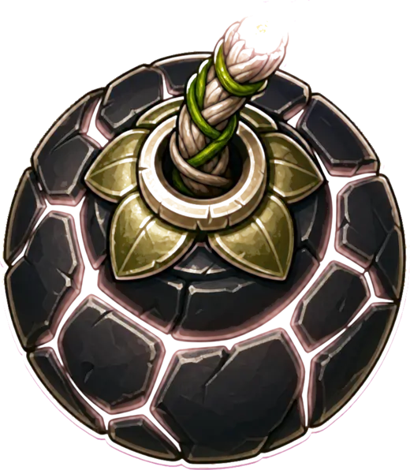

Path-following chain
A chain of colored marbles follows a curved path and closes gaps after matches. A match needs three or more marbles.

LyamurWillowinWorlds game pageThe lemur king guards the jungle.
A marble shooter set in a bright jungle. Aim, match three or more, set off chain reactions and use special abilities to stop the chain reaching the end.
A single test level has the full shoot-and-match loop; the campaign, level map and bosses from the design document are not built yet.

Point to aim and click or tap to fire the current marble. Right-click, or tap the reserve, to swap it with the next one.
Three or more marbles of one color clear. If the gap closes and the two ends make a new match, a chain reaction follows.
Special abilities and board objects help you meet the level objective before the chain reaches the end of the path.
A chain of colored marbles follows a curved path and closes gaps after matches. A match needs three or more marbles.
Wildcard, bomb, rewind, fire, lightning, roots, freeze, water, aim, stone pierce and double shot are implemented in the game rules, each with its own emblem.
Field bombs and color crystals sit on the board and react when hit.
A level can ask you to clear the chain, activate board objects, reach a score or reach a target cascade.
The crowned lemur has reaction poses during play.
A pause screen offers effects volume, music volume and an aim-guide setting.
These are goals for the project, not release dates.
Art assets from the Unity project, not gameplay captures.




A Zuma-style marble shooter in a bright jungle. A crowned lemur king shoots colored marbles at a moving chain, matching three or more and using special abilities.
Not yet. Lyamur is an early prototype with one test level and no public build. The design document aims at mobile and PC.
Follow WillowinWorlds on the social channels linked on this page, or email willowinworlds@gmail.com to ask for updates on Lyamur.
Voting will open on the studio's channels, so following WillowinWorlds is the way to take part.